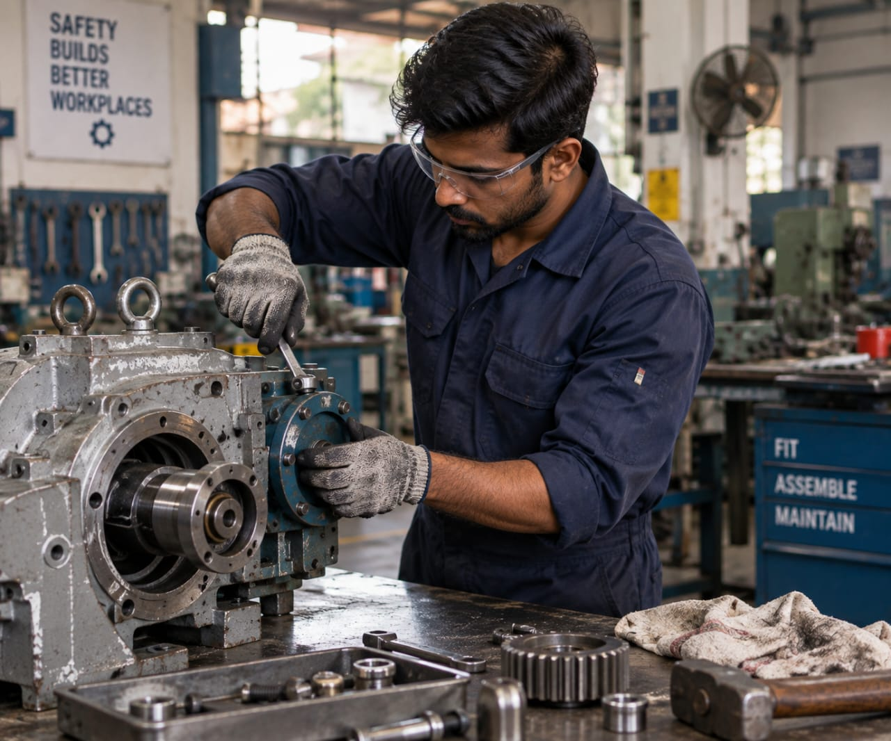

- Imagine a company that makes drilling machines for factories.
- Drilling machine has many parts that need to be put together correctly.
- A Fitter checks where each part should go.
- They fit the parts together and fix them in the right place.
- They check all the parts move properly and the machine works safely.
- 👉 In simple words: Fitters put machine parts together and make sure the machine works properly.
Fitter
What Do They Do?

🎓 How to Become a Fitter
The courses to pursue this career are given below :
After Class 10, you can choose courses that help you learn how to fit, assemble, and maintain machine parts.
ITI – Fitter (NCVT/SCVT)
Duration: 2 Years
Eligibility: Class 10 pass with Mathematics and Science
Entrance Exam: State ITI Admission / Merit-Based Admission
📝 Exam Details
(Click on the exam name to see full details)
State ITI Selection Merit Based AdmissionNote: Diploma in Fitter is offered by different vocational and private institutions. Duration, admission method, and recognition can vary by institution. Check the awarding body and recognition before admission.
- These certification programs help students learn practical fitting skills, machine assembly, maintenance work, and the safe use of fitting tools and equipment.
- Some of the institutions offering certifications in fitting are listed in the college section below.
Note:
(Age limits, marks, and admission process may vary depending on the college or state.
Below are some colleges that offer these courses.
These courses are available in many colleges and universities across India. You can choose colleges based on your location, budget, and entrance exams.)
🏛️ Colleges offering these courses in India
(Tap on a college to view details)
STEP 1
Imagine you are working as a Fitter in an oil and gas company.
STEP 2
A large industrial pump needs to be installed and connected to the pipes.
STEP 3
You check the machine parts and make sure they are in the correct position.
STEP 4
You fit the pump parts and connect them properly using the required tools.
STEP 5
You check the pump and its connections to make sure everything works properly and safely.
STEP 6
If fitting machine parts, assembling equipment, and working with tools interests you, this career may suit you.
Factories & Manufacturing Units
Fit and assemble machine parts and help maintain factory machines.
Oil & Gas Industries
Fit and maintain pumps, machines, and pipe-related equipment.
Power Plants
Work with turbines, pumps, and other large machines.
Shipyards & Marine Industries
Fit and maintain machinery and equipment used in ships.
Automobile Industries
Assemble and maintain machine parts and equipment used to make vehicles.
Mining Industries
Help install and maintain large machines used for mining.
Engineering & Machine Workshops
Assemble, repair, and maintain machines and mechanical parts.
(Click Yes or No for each question)
1. Are you interested in learning how different parts of machines are put together?
2. Are you interested in learning about different types of machines?
3. Do you like finding out how machines work?
4. Imagine you are working as a Fitter in a factory. A large machine needs to be assembled. You check the machine parts, fit them together in the right position, and use tools to fix them in place. You then check the machine to make sure everything works properly. Are you interested in doing this type of work?
5. Imagine you are working as a Fitter in a shipyard. One ship needs a new part for its engine. The new part is ordered from a factory. Once it is delivered, you check the part and fit it into the engine in the correct position. You then check the engine to make sure the new part works properly. Does this kind of work makes you happy?